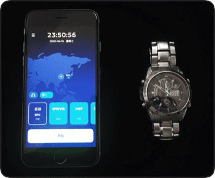
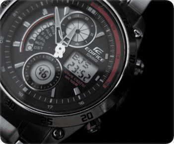
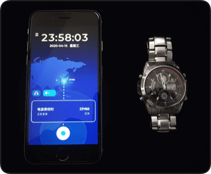
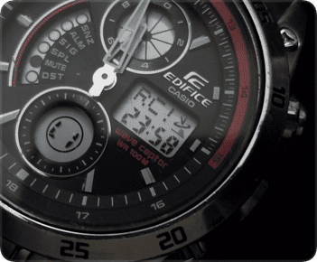
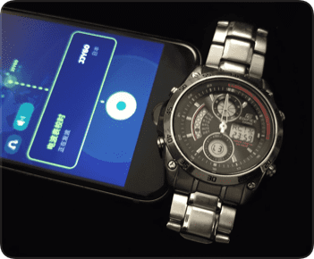
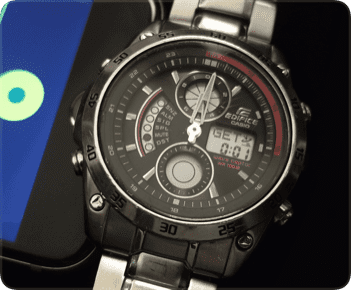
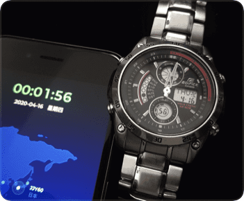

步骤
1
准备好iPhone、手表。（这份教程使用iPhone扬声器）

2
长按左上角按钮检查本地时间设定是否正确，以接收“中国”波为例，设定为“BJS”。

3
点击“开始”，启动发波，把音量调至最大，喇叭发出“嗒嗒嗒嗒”的声音。

4
参照手表说明书，把手表调至“手动接收电波”模式，手表显示“RC!”。

5
迅速把手表贴近 iPhone 扬声器，静待完成校时。

6
大约 3 分钟左右，校时完成，手表显示 “GET”。

7
检查时间是否一致。

步骤
步骤
步骤
步骤
步骤
步骤
*如果失败请使多次尝试或者使用耳机发波，也可以在“设置中”和我们联系。
*如果你的手表说明书遗失，请在“设置”中向我们咨询，我们提供免费检索服务。